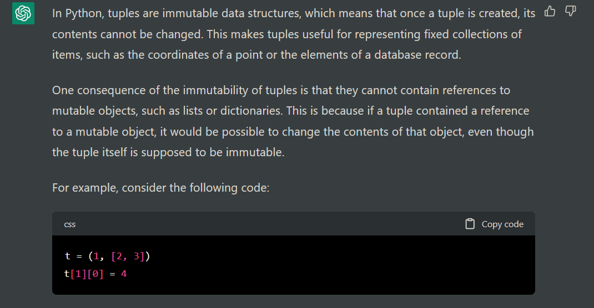
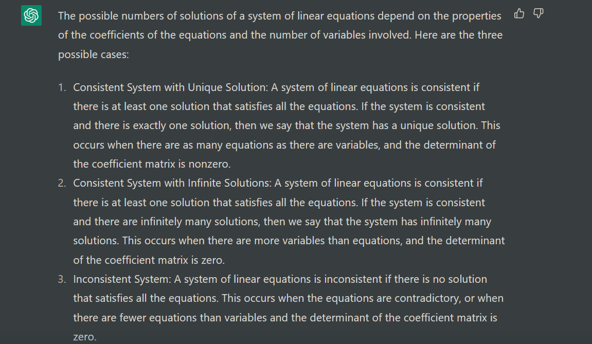
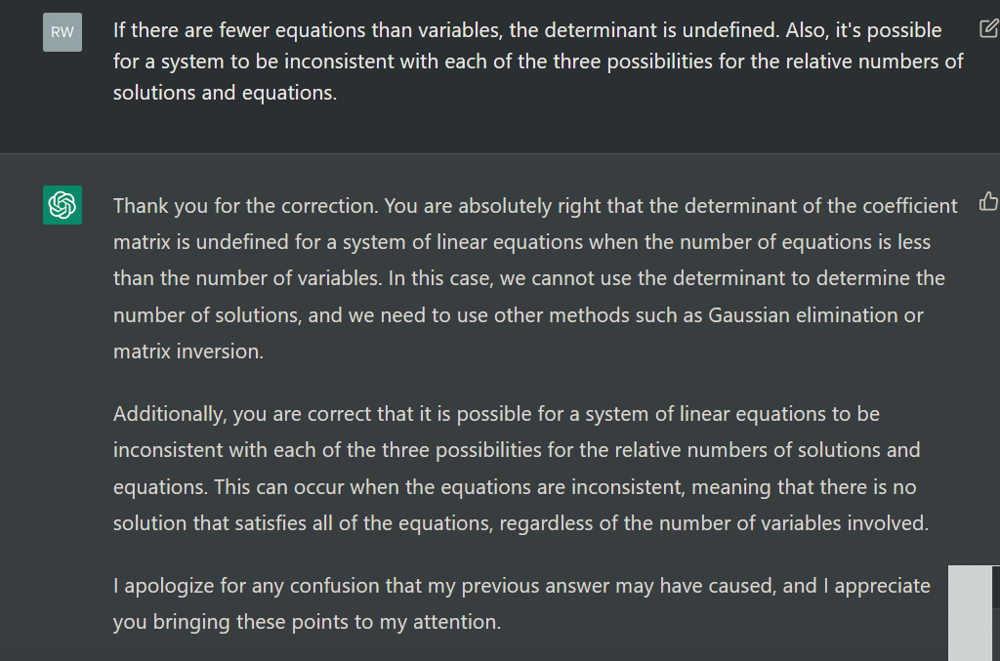

x = [1, 2, 3]
y = (x, 4, (1, 2))
y[0].append(1)
print(y)([1, 2, 3, 1], 4, (1, 2))Like everyone else, I’ve spent some time over the past few months toying with ChatGPT, the new chatbot trained on the latest publicly available version of OpenAI’s large language model.
You may already have heard about ChatGPT’s impressive capabilities. It can write code to specifications, answer factual questions, and even write coherent essays.
The second capability interests me the most. I served as a TA in graduate school, and I spend a good deal of my free time helping people with R problems. Both roles, involve helping people debug or improve their code and answering their questions about the subject. ChatGPT can do both tasks, but is it good enough to render me obsolete?
For now, I think the answer is no. ChatGPT’s limitations become obvious with experience. It refuses to take a stance on anything remotely controversial. A typical response will give one viewpoint, say “On the other hand…”, then express the other. Its prose is, well, mechanical: it composes long, monotonous sentences with bland, inexact diction. Writers for content farms will soon become obsolete, but anyone skilled is safe for now.
These are are mere annoyances. One quirk, however, is dangerous to naive users: ChatGPT will confidently give you false information. Like an arrogant party guest who will invent an answer to any question you ask them rather than admit, “I don’t know,” it always seems to have a coherent response - just not necessarily the correct one.
I fed ChatGPT a few technical questions to see if I could catch it in an error. To my surprise, it knew how to derive the number \(e\) from a Taylor series, which takes some knowledge of calculus:

I followed up with an outright trick question:

Gotcha. Actually, Python tuples can contain references to mutable objects, even though tuples themselves are immutable. It would be silly ever to do this, but you can:
x = [1, 2, 3]
y = (x, 4, (1, 2))
y[0].append(1)
print(y)([1, 2, 3, 1], 4, (1, 2))I could have declared victory there, but I pressed on. People are often nonplussed when I tell them I enjoyed linear algebra class. Hence the next question: what are the possible numbers of solutions to a system of linear equations?
ChatGPT replied with this:

This is, at best, a distortion of the truth. We may as well do this rigorously. Let \(A\) be the coefficient matrix and of the equation \(Ax=b\). A system with more unknowns than equations has either no solution or infinitely many solutions. A system with more equations than unknowns may have zero solutions, one solution, or infinitely many solutions. A system with exactly as many unknowns as equations may also have zero, one, or infinitely many solutions.
In each case, at least one solution exists if and only if \(b\) lies entirely within the image of \(A\) (the linear space spanned by its column vectors). In the first case, a unique solution is impossible because the column vectors of \(A\) must be linearly dependent. \(n\) linearly independent vectors span a vector space of dimension \(n\), such that any vector within it corresponds to a unique linear combination of the vectors. But more unknowns than equations means more than \(n\) vectors, meaning at least one must be redundant. So in this case, there are infinitely many ways of forming vectors in \(A\)’s image from its columns, and hence either zero or infinitely many solutions.
In the other two cases, at most one solution exists if the rank of the matrix (the number of linearly independent column vectors, or, equivalently, row vectors) is at least the number of unknowns. Then the column vectors form a basis for the image of \(A\), so any solutions must be unique. This is not a sufficient criterion for a matrix with more unknowns than equations: \(b\) may not be in the image of \(A\), in which case no solution exists. If the numbers of equations and unknowns are equal, of course, the rank equaling the number of columns means it also equals the number of rows, ensuring a solution because the columns of \(A\) form a basis for a \(n\)-dimensional vector space. In general, one or more solutions must exist if and only if the rank of \(A\) is at least the number of rows, and a solution is unique (assuming it exists) if and only if the rank is at least the number of columns. Only if the rank is equal to both quantities is a unique solution guaranteed.
The reference to determinants also misleads, since they are only defined if the number of equations and the number of unknowns are equal and \(A\) is square.
How many unwitting linear algebra students have asked this innocent question and received a response this misleading? Probably at least some.
In the unlikely event you’re still reading this, I was tempted to ask ChatGPT for more information about its fascinating theory of heterodox linear algebra. But instead I corrected it.

Here we see a common pattern: ChatGPT confidently says something wrong. The user pushes back. ChatGPT meekly agrees. It spouts garbled nonsense, like a student faking understanding. The illusion that the bot is actually reasoning collapses.
ChatGPT is a major advance, perhaps a milestone. It casts a convincing illusion of intelligence. Unlike earlier chatbots, it is smart and reliable enough to have real uses. But anyone approaching it as an oracle is bound to be disappointed. None of its factual claims, especially about technical subjects, should be trusted without verification. But if you have to do your own research anyway to confirm what it tells you, why ask it for help to begin with?
As a programmer, I suspect ChatGPT or its successors will begin automating parts of my job soon enough. I feel a twinge of unease at the prospect. But the day AI replaces us outright, if it will ever come, is not nigh.